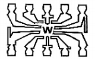
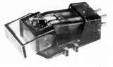
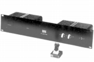
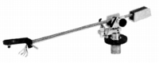

WIN LABORATORIES(ウインラボラトリー）
アメリカの小規模メーカーらしい。詳細不明。振幅比例型（*）とされる特殊なカートリッジが1970年代後半に紹介されている。型番の「SDT」はセミ・コンダクター・ディスクトランスデューサーの略であり、実体は半導体型カートリッジである。当サイトの収録品では、テクニクスに半導体型カートリッジがあるが、テクニクスの半導体型が「ＣＤ−４」方式４チャンネル・レコ−ドに対応することを目的としたものであるの対し、電磁型カートリッジのような発電機構（コイル・磁石）を持たないこと・軽量などに利点を求めた純オーディオ的な製品だったようだ。なお電気抵抗の変化を電圧変化に変換する為に、直流電源が必要であり、またイコライザーも特殊なものが必要。同社では直流電源及びイコライザーを「パワーソース」と呼んでいる。
代理店は、当初は菅原商会、1981年頃にはビッグウェイインターナショナル。1984年頃姿を消した。
*振幅比例型
針先の振幅に比例した出力特性を持つのは、半導体型カートリッジ以外でも、オ-レックスやスタックスのコンデンサー型、同じくオーレックスやトリオの光電型カートリッジも振幅比例型に該当する。どの方式も特殊なイコライザーが必要。
�T.カートリッジ

(SDT-10)
(SDT-PG-10)
�U.アーム

(TA-10)